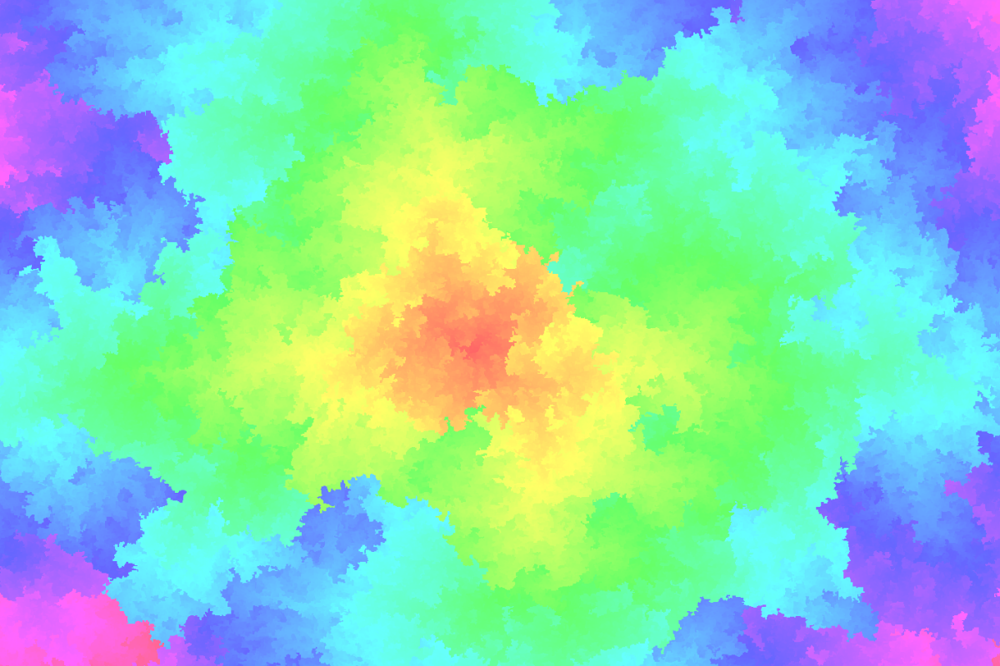
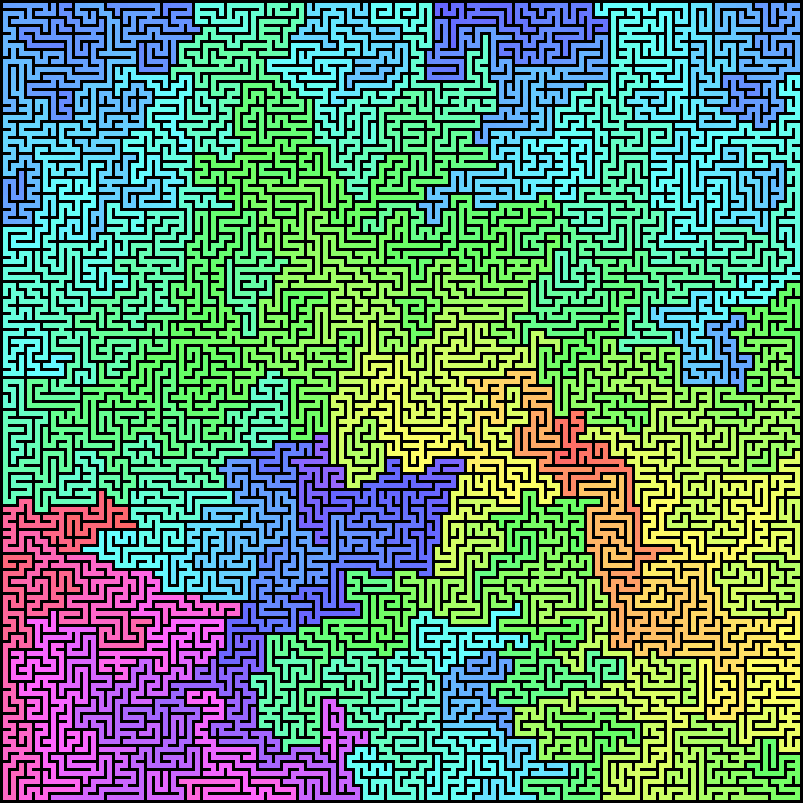
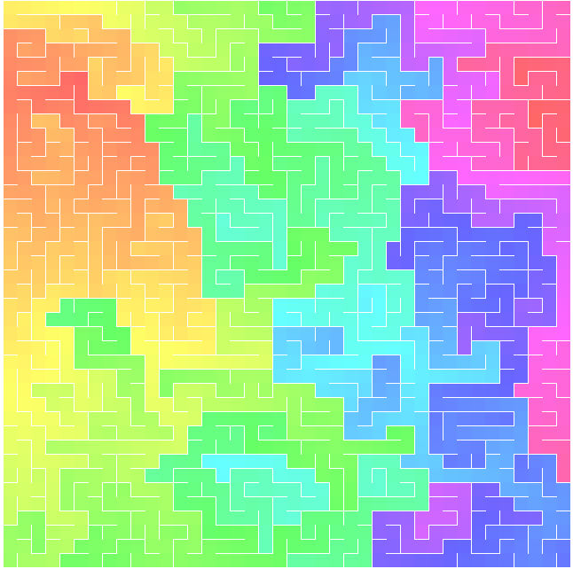
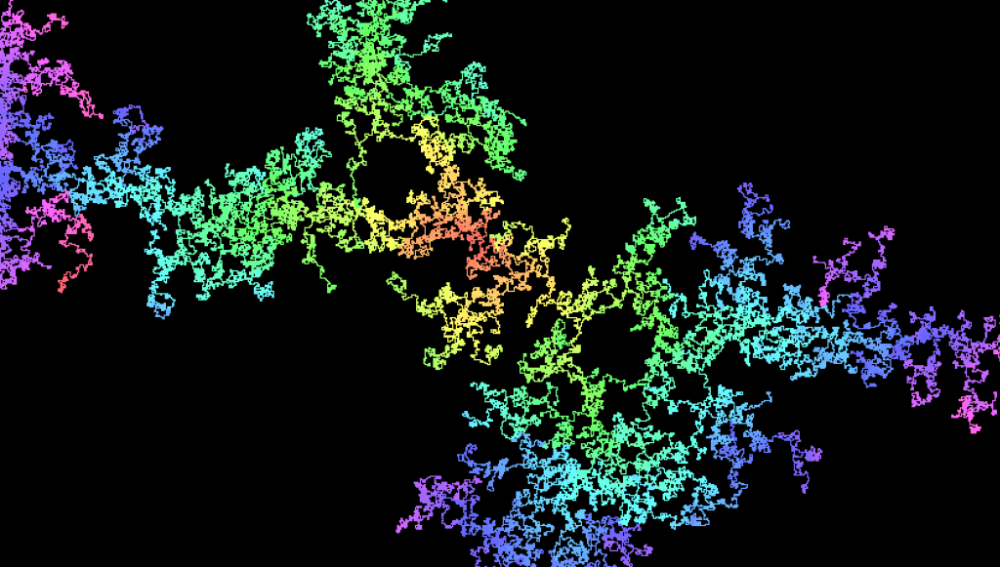
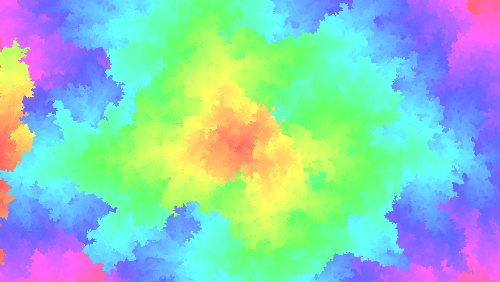
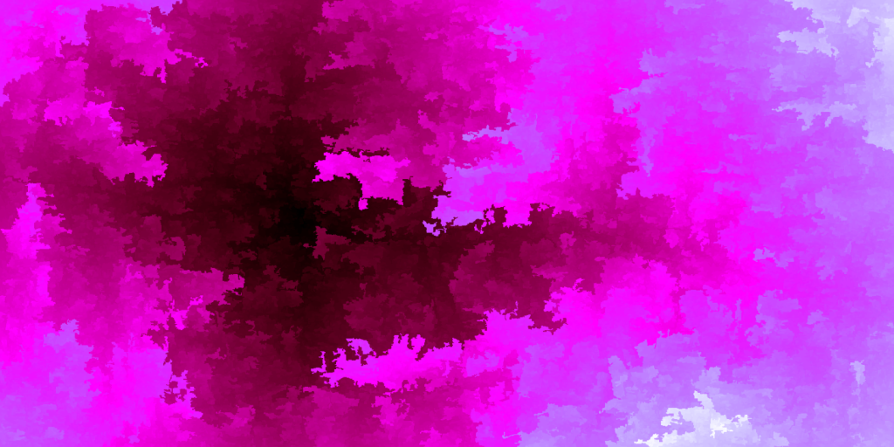

Colourful intermediate results

While killing time in the train, we worked with Anne on a small maze generation algorithm. But what started to be a way to visualise the results, turned into a result in itself (run it yourself here, be patient):





Technically, the rendering is done using HTML canvas. I will detail the maze generation algorithm itself in a future post.
This led me to notice that using the HSL notation when drawing on a canvas was 3 times slower than using other color notation. (I created this JSperf). I filled a bug report on the Chromium bug tracker, let’s hope it will be addressed in the future.
The colourful visualisation is published online, you can run it here.